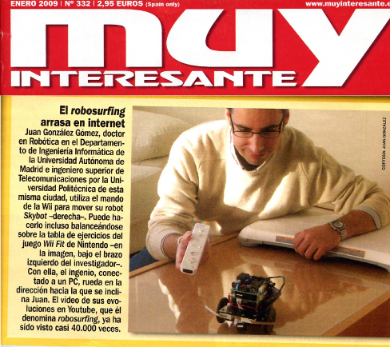

En la revista Muy interesante de Enero de 2009 han escrito un artículo sobre otros usos de la wii, titulado: “La varita mágica de la wii”. Entre otras cosas, hablan sobre mis “frikeos” controlando robots con el wiimote y la wii balance board 😉
Me enteré de su publicación a través de Bartek (gracias!).
El artículo completo escaneado
está disponible aquí está disponible como imágenes jpg aquí:
(
Página 40)
(
Página 41)
(Página 42)
(Página 43)
(Ocupa mucho menos en .jpg)


La revista también tiene una Versión electrónica, disponible en www.muyinteresante.es, aunque el artículo es algo diferente al publicado en papel, y tiene menos fotos.
El vídeo al que hacen referencia en el artículo está disponible en la página con información de la wii board.
PD.- La foto superior es una composición hecha por mí, No es la portada de la revista.
hey Juan, que interesante. Bien, bien! 😉
JAJAJA… lo publicaron sin decirte nada??? que fuerte!
Eres toda una personalidad pública!!!